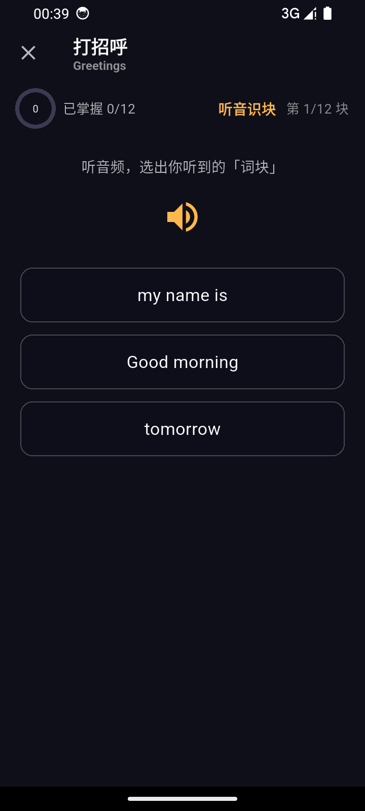
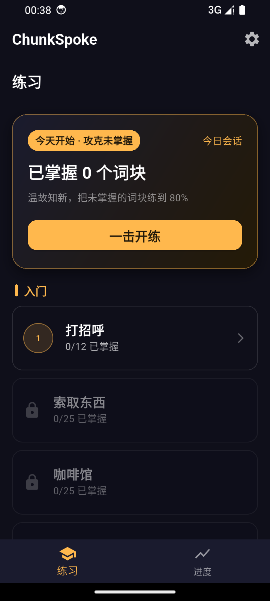
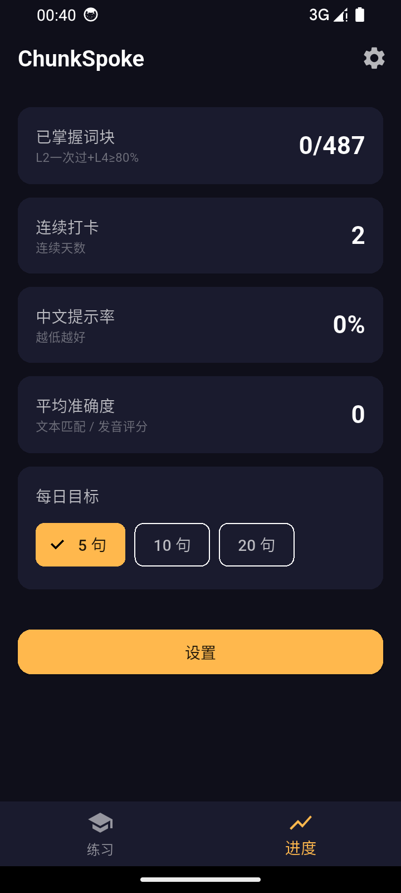
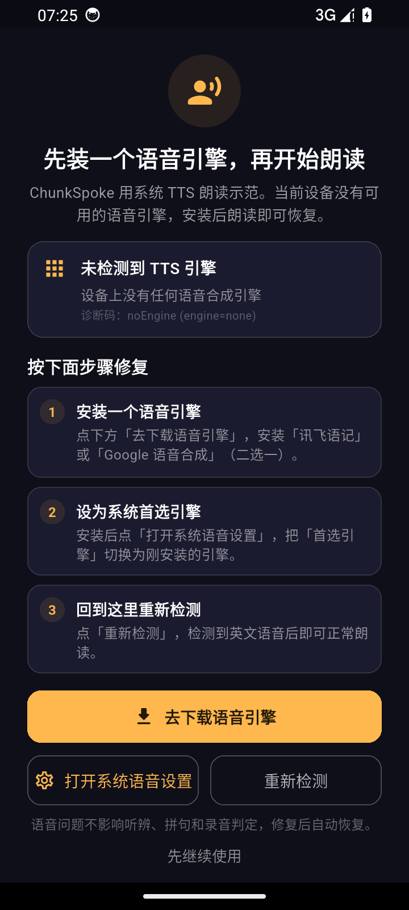
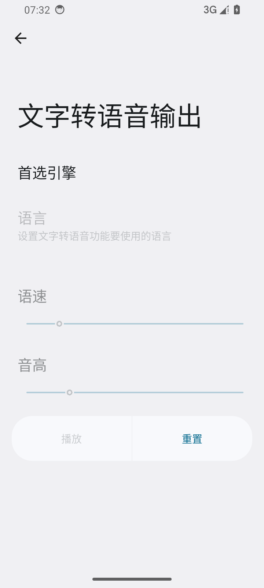

听音识块
听音频，从候选中选出你听到的「词块」，建立声音→词块的直觉。
离线 · 免费 · 语音识别逐句判定
仅支持 64 位（arm64-v8a）机型，Android 7.0 及以上 · 约 55.5 MB
下载完成后点击安装，首次安装需允许“安装未知应用”（见下方 FAQ 步骤）。

↑ 应用内真实界面（听音识块 · 五步闭环之一）
听音频，从候选中选出你听到的「词块」，建立声音→词块的直觉。

跟读单个词块，再把多个词块自由拼成完整句子；语音识别逐句判定，即时反馈。

每句判定后记录掌握度，按遗忘曲线安排复习，把未掌握练到 80%。
完整五步闭环：听辨 → 说块 → 拼句 → 说句 → 掌握，均在应用内实现（以上为真实界面截图）。
| 维度 | ChunkSpoke | 传统背单词 App |
|---|---|---|
| 学习单位 | 词块（预制件，可自由拼句） | 孤立单词列表 |
| 开口判定 | 每句语音识别逐句判定 | 多数无开口判定 / 仅跟读不判定 |
| 联网需求 | 主练习全程离线（仅「自由造句」的 AI 点评可选联网，可在设置关闭） | 常需联网 / 订阅 |
| 费用 | 免费 | 部分功能需付费订阅 |
| 数据 | 学习进度只存本机；不上传录音、不要求注册账号 | 多需账号并上传进度 |
Android 出于安全默认禁止从浏览器 / 文件管理器直接安装 APK。首次安装请：
此授权仅针对本次安装来源，可随时在「设置 → 应用 → 特殊应用权限 → 安装未知应用」中关闭。
主练习（听辨 → 说块 → 拼句 → 说句 → 掌握）在 APK 与离线语音模型下载完成后全程离线运行、免费。唯一的联网项是「自由造句」的 AI 点评：它会把你识别出的句子文本发送到开发者自建的代理（不含录音、不含设备标识），用于生成改进建议；可在「设置 → AI 联网点评」关闭，关闭后由本机规则引擎判定，功能不受影响。
支持 Android 7.0（API 24）及以上，但仅 64 位（arm64-v8a）机型：包内只带 arm64 原生库。32 位老机型、部分模拟器与 x86 设备无法安装，点击安装会提示「解析软件包时出现问题 / 与设备不兼容」。如不确定，可在「设置 → 关于手机」查看，或安装后用应用内「检查更新」验证。
v1.4.7 起，ChunkSpoke 会在启动时检测系统语音引擎；没有引擎或没有英文语音时，会先展示修复引导页，不再等到点喇叭才报错。


在练习中点喇叭才发现时，App 会弹出可操作的对话框，可选「去设置」「去下载」或「取消」。语音问题不影响听辨、拼句和录音判定，也可以点「先继续使用」，之后从「设置 → 语音朗读（TTS）」再检测。
小米 / 红米（HyperOS / MIUI）的「小爱语音引擎」、华为 / 荣耀的「智慧语音」可能未预装英文语音；按第 3 步补装，或改用讯飞语记 / Google 语音合成。装完仍无声时，重启手机后再检测一次。
学习进度、掌握度、复习排程、录音全部只保存在本机，不上传、不要求注册账号。仅两处会走网络：①「自由造句」的 AI 点评（发送识别出的句子文本，可在设置关闭）；②「检查更新」时读取版本清单。除此之外没有任何数据上报。
v1.5.1
仅支持 64 位（arm64-v8a）机型 · Android 7.0 及以上
用手机相机或微信扫一扫，在手机上打开本页即可直接开始下载。
二维码指向本站，因此永远给出当前最新版本。